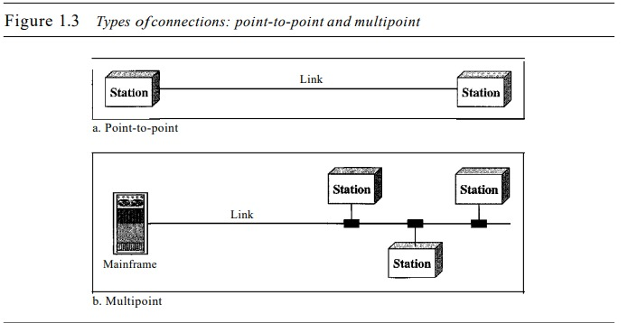
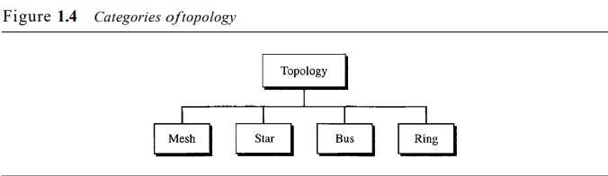
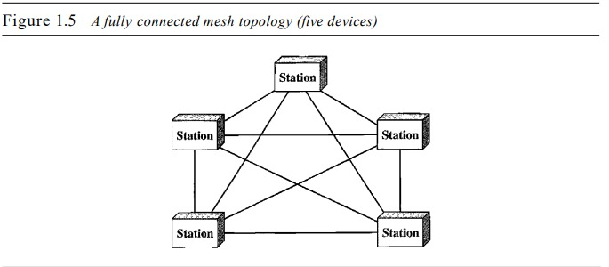
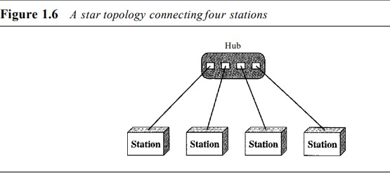
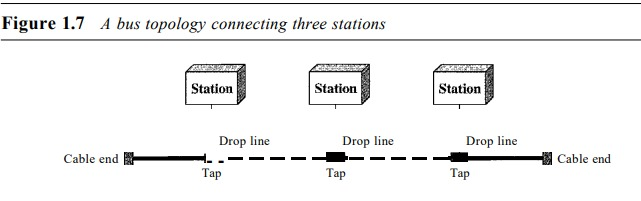
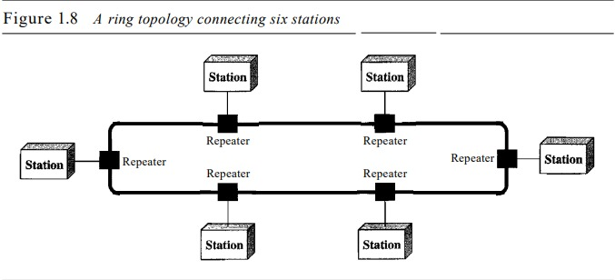
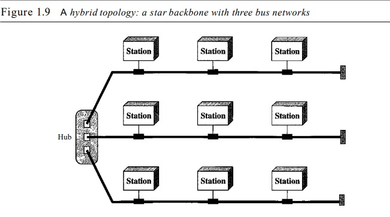
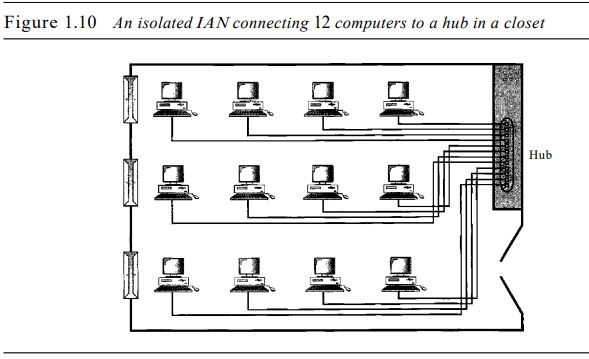
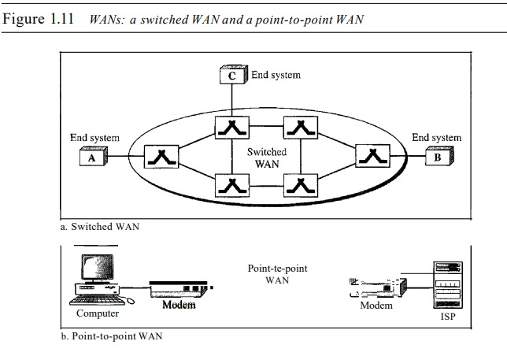

2. Networks
A network is a set of devices (often referred to as nodes) connected by communication links. A node can be a computer, printer, or any other device capable of sending and/or receiving data generated by other nodes on the network
Distributed Processing
Most networks use distributed processing, in which a task is divided among multiple computers. Instead of one single large machine being responsible for all aspects of a process, separate computers (usually a personal computer or workstation) handle a subset
Network Criteria
A network must be able to meet a certain number of criteria. The most important of these are performance, reliability, and security.
Performance
Performance can be measured in many ways, including transit time and response time. Transit time is the amount of time required for a message to travel from one device to another. Response time is the elapsed time between an inquiry and a response. The performance of a network depends on a number of factors, including the number of users, the type of transmission medium, the capabilities of the connected hardware, and the efficiency of the software.
Performance is often evaluated by two networking metrics: throughput and delay. We often need more throughput and less delay. However, these two criteria are often contradictory. If we try to send more data to the network, we may increase throughput but we increase the delay because of traffic congestion in the network.
Reliability
In addition to accuracy of delivery, network reliability is measured by the frequency of failure, the time it takes a link to recover from a failure, and the network's robustness in a catastrophe.
Security
Network security issues include protecting data from unauthorized access, protecting data from damage and development, and implementing policies and procedures for recovery from breaches and data losses
Physical Structure
Before discussing networks, we need to define some network attributes.
Type of Connection
A network is two or more devices connected through links. A link is a communications pathway that transfers data from one device to another. For visualization purposes, it is simplest to imagine any link as a line drawn between two points. For communication to occur, two devices must be connected in some way to the same link at the same time. There are two possible types of connections: point-to-point and multipoint.
Point-to-Point
A point-to-point connection provides a dedicated link between two devices. The entire capacity of the link is reserved for transmission between those two devices. Most point-to-point connections use an actual length of wire or cable to connect the two ends, but other options, such as microwave or satellite links, are also possible (see Figure 1.3a). When you change television channels by infrared remote control, you are establishing a point-to-point connection between the remote control and the television's control system.
Multipoint
A multipoint (also called multidrop) connection is one in which more than two specific devices share a single link (see Figure 1.3b). In a multipoint environment, the capacity of the channel is shared, either spatially or temporally. Ifseveral devices can use the link simultaneously, it is a spatially shared connection. If users must take turns, it is a timeshared connection
Physical Topology
The term physical topology refers to the way in which a network is laid out physically.: two or more devices connect to a link; two or more links form a topology. The topology of a network is the geometric representation of the relationship of all the links and linking devices (usually called nodes) to one another. There are four basic topologies possible: mesh, star, bus, and ring (see Figure 1.4)
Mesh Topology
Mesh In a mesh topology, every device has a dedicated point-to-point link to every other device. The term dedicated means that the link carries traffic only between the two devices it connects. To find the number of physical links in a fully connected mesh network with n nodes, we first consider that each node must be connected to every other node. Node 1 must be connected to n - I nodes, node 2 must be connected to n - 1 nodes, and finally node n must be connected to n - 1 nodes. We need n(n - 1) physical links. However, if each physical link allows communication in both directions (duplex mode), we can divide the number of links by 2. In other words, we can say that in a mesh topology, we need
n(n -1) /2
duplex-mode links. To accommodate that many links, every device on the network must have n - 1 input/output (VO) ports (see Figure 1.5) to be connected to the other n - 1 stations
A mesh offers several advantages over other network topologies. First, the use of dedicated links guarantees that each connection can carry its own data load, thus eliminating the traffic problems that can occur when links must be shared by multiple devices. Second, a mesh topology is robust. If one link becomes unusable, it does not incapacitate the entire system. Third, there is the advantage of privacy or security. When every message travels along a dedicated line, only the intended recipient sees it. Physical boundaries prevent other users from gaining access to messages. Finally, point-to-point links make fault identification and fault isolation easy. Traffic can be routed to avoid links with suspected problems. This facility enables the network manager to discover the precise location of the fault and aids in finding its cause and solution.
The main disadvantages of a mesh are related to the amount of cabling and the number of I/O ports required. First, because every device must be connected to every other device, installation and reconnection are difficult. Second, the sheer bulk of the wiring can be greater than the available space (in walls, ceilings, or floors) can accommodate. Finally, the hardware required to connect each link (I/O ports and cable) can be prohibitively expensive. For these reasons a mesh topology is usually implemented in a limited fashion, for example, as a backbone connecting the main computers of a hybrid network that can include several other topologies.
One practical example of a mesh topology is the connection of telephone regional offices in which each regional office needs to be connected to every other regional office
Star Topology
In a star topology, each device has a dedicated point-to-point link only to a central controller, usually called a hub. The devices are not directly linked to one another. Unlike a mesh topology, a star topology does not allow direct traffic between devices. The controller acts as an exchange: If one device wants to send data to another, it sends the data to the controller, which then relays the data to the other connected device (see Figure 1.6) .
A star topology is less expensive than a mesh topology. In a star, each device needs only one link and one I/O port to connect it to any number of others. This factor also makes it easy to install and reconfigure. Far less cabling needs to be housed, and additions, moves, and deletions involve only one connection: between that device and the hub.
Other advantages include robustness. If one link fails, only that link is affected. All other links remain active. This factor also lends itself to easy fault identification and fault isolation. As long as the hub is working, it can be used to monitor link problems and bypass defective links.
One big disadvantage of a star topology is the dependency of the whole topology on one single point, the hub. If the hub goes down, the whole system is dead.
Although a star requires far less cable than a mesh, each node must be linked to a central hub. For this reason, often more cabling is required in a star than in some other topologies (such as ring or bus).
The star topology is used in local-area networks (LANs), High-speed LANs often use a star topology with a central hub
Bus Topology
The preceding examples all describe point-to-point connections. A bus topology, on the other hand, is multipoint. One long cable acts as a backbone to link all the devices in a network (see Figure 1.7)
Nodes are connected to the bus cable by drop lines and taps. A drop line is a connection running between the device and the main cable. A tap is a connector that either splices into the main cable or punctures the sheathing of a cable to create a contact with the metallic core. As a signal travels along the backbone, some ofits energy is transformed into heat. Therefore, it becomes weaker and weaker as it travels farther and farther. For this reason there is a limit on the number of taps a bus can support and on the distance between those taps.
Advantages of a bus topology include ease of installation. Backbone cable can be laid along the most efficient path, then connected to the nodes by drop lines of various lengths. In this way, a bus uses less cabling than mesh or star topologies. In a star, for example, four network devices in the same room require four lengths of cable reaching all the way to the hub. In a bus, this redundancy is eliminated. Only the backbone cable stretches through the entire facility. Each drop line has to reach only as far as the nearest point on the backbone.
Disadvantages include difficult reconnection and fault isolation. A bus is usually designed to be optimally efficient at installation. It can therefore be difficult to add new devices. Signal reflection at the taps can cause degradation in quality. This degradation can be controlled by limiting the number and spacing of devices connected to a given length of cable. Adding new devices may therefore require modification or replacement of the backbone.
In addition, a fault or break in the bus cable stops all transmission, even between devices on the same side of the problem. The damaged area reflects signals back in the direction of origin, creating noise in both directions. Bus topology was the one of the first topologies used in the design of early localarea networks. Ethernet LANs can use a bus topology
Ring Topology
In a ring topology, each device has a dedicated point-to-point connection with only the two devices on either side of it. A signal is passed along the ring in one direction, from device to device, until it reaches its destination. Each device in the ring incorporates a repeater. When a device receives a signal intended for another device, its repeater regenerates the bits and passes them along (see Figure 1.8)
A ring is relatively easy to install and reconfigure. Each device is linked to only its immediate neighbors (either physically or logically). To add or delete a device requires changing only two connections. The only constraints are media and traffic considerations (maximum ring length and number of devices). In addition, fault isolation is simplified. Generally in a ring, a signal is circulating at all times. If one device does not receive a signal within a specified period, it can issue an alarm. The alarm alerts the network operator to the problem and its location.
However, unidirectional traffic can be a disadvantage. In a simple ring, a break in the ring (such as a disabled station) can disable the entire network. This weakness can be solved by using a dual ring or a switch capable of closing off the break. Ring topology was prevalent when IBM introduced its local-area network Token Ring. Today, the need for higher-speed LANs has made this topology less popular.
Hybrid Topology
A network can be hybrid. For example, we can have a main star topology with each branch connecting several stations in a bus topology as shown in Figure 1.9
Network Models
Computer networks are created by different entities. Standards are needed so that these heterogeneous networks can communicate with one another. The two best-known standards are the OSI model and the Internet model. In Chapter 2 we discuss these two models. The OSI (Open Systems Interconnection) model defines a seven-layer network; the Internet model defines a five-layer network. This book is based on the Internet model with occasional references to the OSI model.
The OSI (Open Systems Interconnection) Data Model:
-ISO standards for computer networks design and functioning.
-Involves atleast 7 layers, each
playing a specific role when applications are communicating over the net.
-During the
sending
process, each layer (from top to bottom) will add a specific header to the raw data.
-At the
reception, headers are eliminated conversely until the data arrived to the receiving
application.

Physical Layer:
ensures a safe and efficient travel of data: consists of electronic circuits
for
data transmission etc.
Data Link Layer: in charge of data encapsulation under the
form of
packets and their interpretation at the physical layer.
Network Layer: in charge of
packets transmission from a source A to a destination B.
Transport Layer: in charge
of
the delivery of packets from a source A to a destination B.
Session Layer: in charge
of
the managemnet of the network access.
Presentation Layer: determines the format of
the
data transmitted to applications, data compressing/decompressing, encrypting etc.
Application
Layer: contains the applications which are used by the end-user, such as Java, Word etc.
Categories of Network
Today when we speak of networks, we are generally referring to two primary categories: local-area networks and wide-area networks. The category into which a network falls is determined by its size. A LAN normally covers an area less than 2 mi; a WAN can be worldwide. Networks of a size in between are normally referred to as metropolitanarea networks and span tens of miles.
Local Area Network
A local area network (LAN) is usually privately owned and links the devices in a single office, building, or campus (see Figure 1.10). Depending on the needs of an organization and the type of technology used, a LAN can be as simple as two PCs and a printer in someone's home office; or it can extend throughout a company and include audio and video peripherals. Currently, LAN size is limited to a few kilometers
LANs are designed to allow resources to be shared between personal computers or workstations. The resources to be shared can include hardware (e.g., a printer), software (e.g., an application program), or data. A common example of a LAN, found in many business environments, links a workgroup of task-related computers, for example, engineering workstations or accounting PCs. One of the computers may be given a largecapacity disk drive and may become a server to clients. Software can be stored on this central server and used as needed by the whole group. In this example, the size of the LAN may be determined by licensing restrictions on the number of users per copy of software, or by restrictions on the number of users licensed to access the operating system. In addition to size, LANs are distinguished from other types of networks by their transmission media and topology. In general, a given LAN will use only one type of transmission medium. The most common LAN topologies are bus, ring, and star. Early LANs had data rates in the 4 to 16 megabits per second (Mbps) range. Today, however, speeds are normally 100 or 1000 Mbps. Wireless LANs are the newest evolution in LAN technology.
Wide Area Network
A wide area network (WAN) provides long-distance transmission of data, image, audio, and video information over large geographic areas that may comprise a country, a continent, or even the whole world. A WAN can be as complex as the backbones that connect the Internet or as simple as a dial-up line that connects a home computer to the Internet. We normally refer to the first as a switched WAN and to the second as a point-to-point WAN (Figure 1.11). The switched WAN connects the end systems, which usually comprise a router (internetworking connecting device) that connects to another LAN or WAN. The point-to-point WAN is normally a line leased from a telephone or cable TV provider that connects a home computer or a small LAN to an Internet service provider (ISP). This type of WAN is often used to provide Internet access
An early example of a switched WAN is X.25, a network designed to provide connectivity between end users. As we will see in Chapter 18, X.25 is being gradually replaced by a high-speed, more efficient network called Frame Relay. A good example of a switched WAN is the asynchronous transfer mode (ATM) network, which is a network with fixed-size data unit packets called cells. We will discuss ATM in Chapter 18. Another example ofWANs is the wireless WAN that is becoming more and more popular.
Metropolitan Area Networks
A metropolitan area network (MAN) is a network with a size between a LAN and a WAN. It normally covers the area inside a town or a city. It is designed for customers who need a high-speed connectivity, normally to the Internet, and have endpoints spread over a city or part of city. A good example of a MAN is the part of the telephone company network that can provide a high-speed DSL line to the customer. Another example is the cable TV network that originally was designed for cable TV, but today can also be used for high-speed data connection to the Internet.
Interconnection of Network
Today, it is very rare to see a LAN, a MAN, or a LAN in isolation; they are connected to one another. When two or more networks are connected, they become an internetwork, or internet. As an example, assume that an organization has two offices, one on the east coast and the other on the west coast. The established office on the west coast has a bus topology LAN; the newly opened office on the east coast has a star topology LAN. The president of the company lives somewhere in the middle and needs to have control over the company from her horne. To create a backbone WAN for connecting these three entities (two LANs and the president's computer), a switched WAN (operated by a service provider such as a telecom company) has been leased. To connect the LANs to this switched WAN, however, three point-to-point WANs are required. These point-to-point WANs can be a high-speed DSL line offered by a telephone company or a cable modern line offered by a cable TV provider as shown in Figure 1.12.